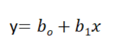
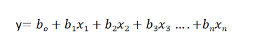
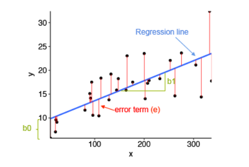
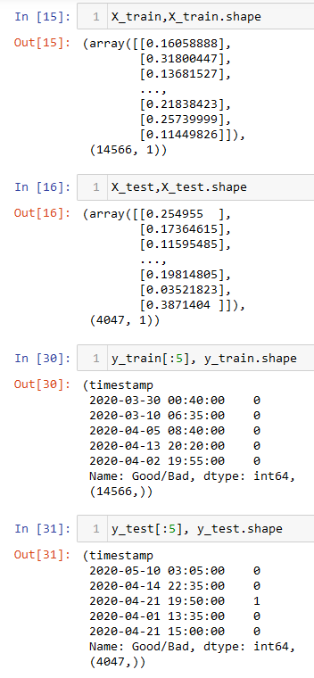
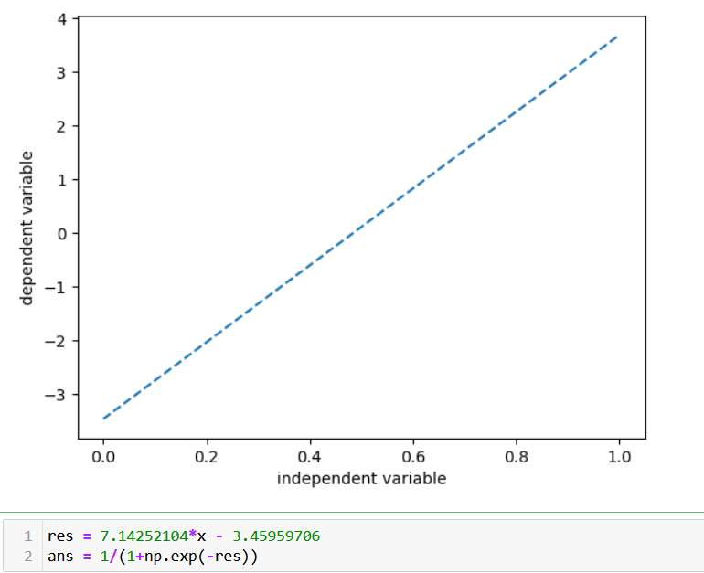
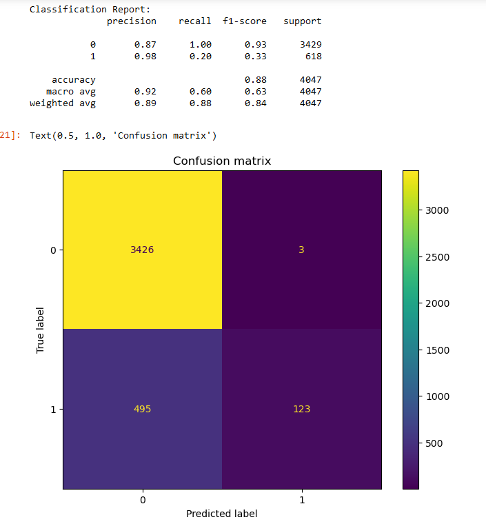

Linear Regression
Introduction
Also known as Ordinary least squares Linear Regression. Linear Regression is the supervised Machine Learning model in which the model finds the best fit linear line between the independent and dependent variable i.e it finds the linear relationship between the dependent and independent variable. In simple linear regression the number of independent variables is just one. Here is how a linear regression equation looks like:
In multiple linear regression the number of independent variables increases, and this is how the multiple linear regression equation looks:
Goal of this technique is to fit a line using the independent variables such that the error while predicting the dependent variable using the same line is minimized.
How Does Linear Regression works
In order to find the optimal slope and intercept of the line, we first calculate the error term. Error term defined how much away our line is from the actual values we want to predict. The goal is to minimize the error term. Hence, as a general practice in mathematics, derivates are calculated with respect to both the entities, and are equated to zero. Using these two new equations, we get the value slope and intercept for which the error term is minimized.
Limitations
The biggest disadvantage of linear regression is that it assumes:
- The relationship between the dependent and independent variable is linear.
- There is no correlation present among the dependent variables.
- The variance of errors is constant.
Data Preparation
From the above image we can observe that the data is in numerical format with only a single quantitative predictor. Apart from that, the data is split into splits using train_test_split function. This function splits the data randomly, where a specific percentage of data points are partitioned as training set and the rest as testing. From the training set, a small parition is seperated for validation. By default, this function chooses points without replacement. Here is the data: Link.
Code
The code for classification tasks can be found HERE..
Results
Given that the label of the dataset is binary, logistic regression is been used instead of linear regression since the context of both the techniques is identical. Here is the regression line:
The dependent variable is the maintenance cycle (either 0 which means maintenance is not required or 1 vice versa) The model gave out 88% accuracy. However, the performance is poor in predecting the maintenance cycle (for predicting label "1"). This is likely due to the non linearity present in the data which is not captured by the regression model. Here is the classification report and the cofusion matrix for this classifier:
Conclusions
The performance of regression is inferior to what we observed from decision trees, naive bayes and SVMs. This result is justified given that the number predictors used in the model is very less as compared to the other classifiers. Additionally, as mentioned above regression model are not suitable for learning non linear patterns in the data.